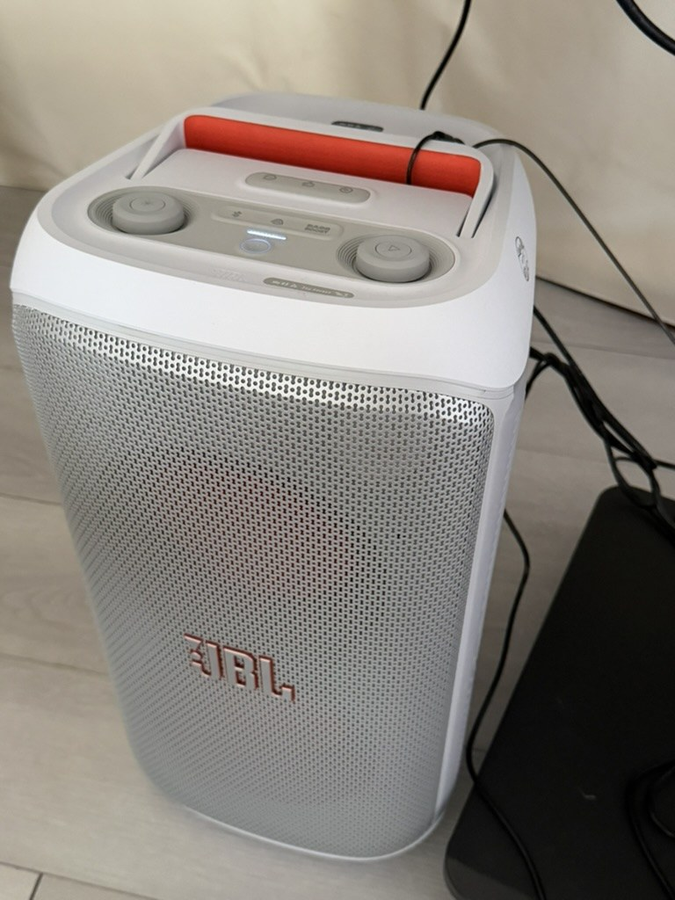
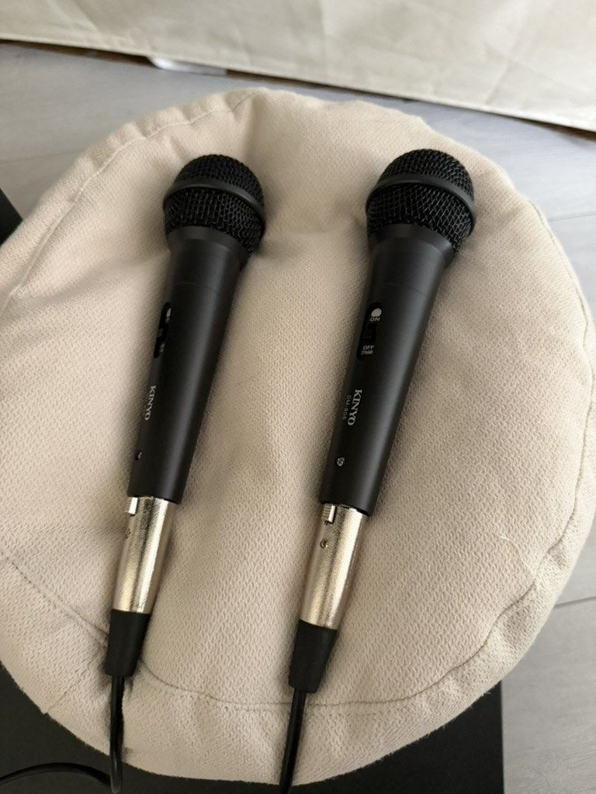
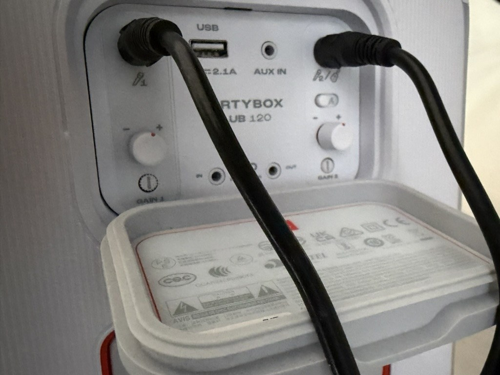
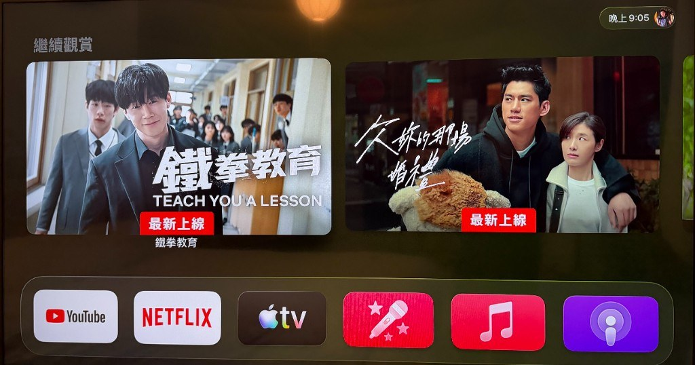
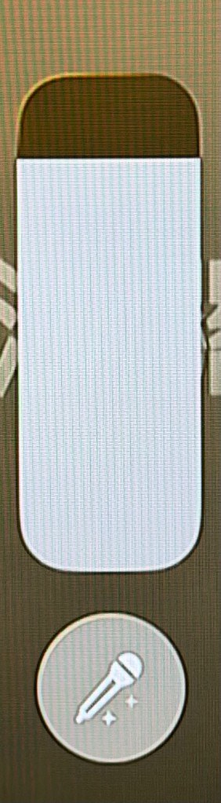

步驟 1｜開啟 JBL 喇叭
這台是現場的 JBL PartyBox。先按頂部電源鍵開機（電源燈會亮起），再用頂部音量旋鈕調整整體音量。音樂伴奏與麥克風聲音都會從這台喇叭播出。
卡拉OK分成兩部分：
電視負責播歌與歌詞，喇叭負責麥克風人聲；兩者搭配使用即可。
請先看這張總覽圖：包含系統連接、Apple TV 人聲消除，以及遙控器按鍵說明。
對照下方三張照片，確認喇叭、麥克風與背面插孔位置。

這台是現場的 JBL PartyBox。先按頂部電源鍵開機（電源燈會亮起），再用頂部音量旋鈕調整整體音量。音樂伴奏與麥克風聲音都會從這台喇叭播出。

現場提供兩支麥克風。唱歌前請把麥克風手把上的開關撥到 ON；不用時撥回 OFF，避免雜音或電池／設備耗電。

把兩支麥克風的線，分別插入喇叭背面上方的麥克風插孔 1與插孔 2。
順時針提高、逆時針降低。建議先把伴奏音量調好，再微調麥克風，避免太大聲或太小聲。
上方說明圖已含人聲消除與遙控器重點；若想逐步對照畫面，可再看以下步驟。

先將電視訊號源切到 HDMI1（Apple TV）。在 Apple TV 主畫面底部 App 列，找到粉紅色麥克風圖示的唱歌 App並開啟，再選歌單或搜尋歌曲。
電視切換方式可參考 電視使用說明。

歌曲播放時，依說明圖進入人聲消除設定，用垂直滑桿降低原唱。調低後只剩伴奏與歌詞，即可拿麥克風跟著唱。